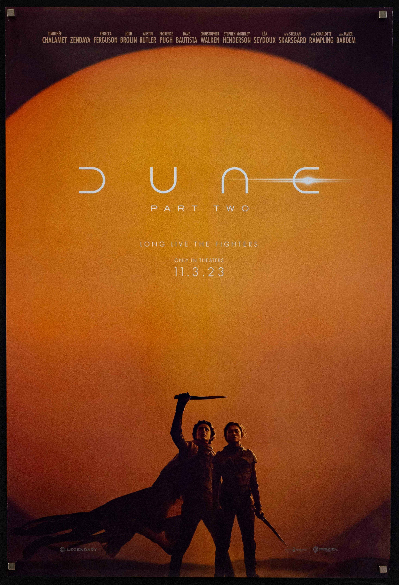
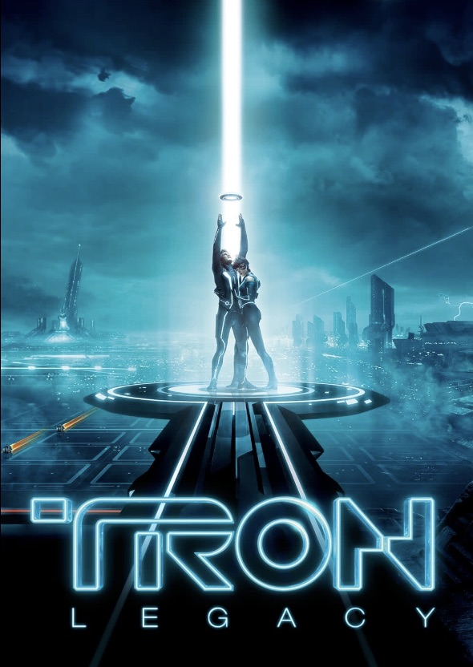

My Favorite Scores
These are the scores I return to again and again — the ones that make scenes unforgettable and sometimes move me even without the film.

Dune
Composed by Hans Zimmer • 2021
This score transports you to a different world, literally. With rich, alien-like sounds mixed with classic orchestral themes, Zimmer creates an unforgettable score here.

Schindler's List
Composed by John Williams • 1993
This haunting score captures the emotional weight of the Holocaust, with its melancholic melodies and powerful orchestration. Williams has brought tears to my eyes many times through these pieces.

Tron: Legacy
Composed by Daft Punk • 2010
This score brings a futuristic electronic sound to the world of Tron, with synthesizers and drum machines creating an immersive audio experience. Daft Punk was a bold choice, but they went down in history with this adrenaline-invoking score.